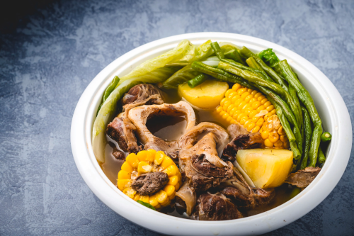

Home
Bulalo

Ingredients
-
2 beef leg bones, cut into 3–4 pcs each
-
1.5 kg beef shanks
-
1 Tbsp black pepper corns
-
2 Large red onions, quartered
-
2 pcs large corn, cut into 5 pieces per corn
-
5 Stalks spring onions, chopped
-
Leafy vegetables like bok choy or cabbage
-
Water
-
Sea salt and/or fish sauce
Instructions:
-
Place beef bones on a deep pot together with onions and pepper corns.
-
Add water until bones are entirely covered.
-
Bring to a boil and simmer for 2.5 hours, set it aside and keep it cool once cooled down remove the bones and set it aside. Using a sieve strain the broth and place it in a large bowl, place it on the fridge until the oil rises to the top and hardens,
now you can easily separate it out then throw it away, you will not be using this unhealthy fat.
-
Place beef shanks and cooked bones on a deep pot then the clear broth, bring this to a boil then simmer for 30 minutes, remove any scum that rises. Add corn then continue to simmer for an hour.
-
Add your leafy vegetables and simmer for 3 minutes.
-
Flavour with salt or fish sauce, season with freshly ground pepper and top with chopped spring onions.